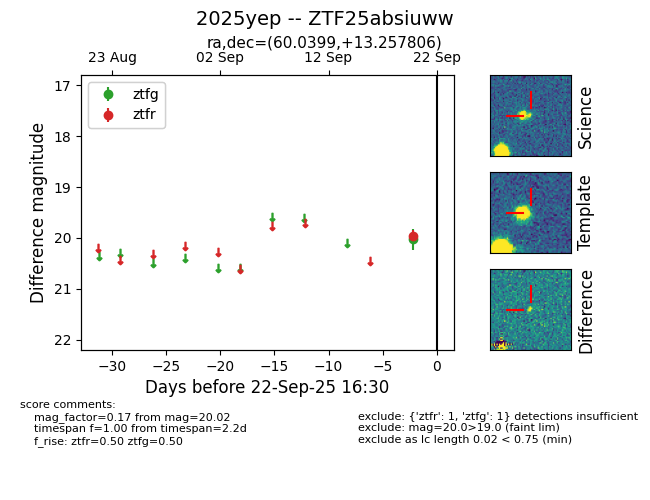

FINK: ZTF25absiuww
Lasair: ZTF25absiuww
ALeRCE: ZTF25absiuww
TNS: 2025yep
YSE: 2025yep
ZTF25absiuww (ztf,fink)
2025yep (tns,yse)
equatorial (ra, dec) = (60.0399,+13.25781)
galactic (l, b) = (177.6176,-28.96158)

last ztfg=20.02, ztfr=19.97
1 ztfg, 1 ztfr detections